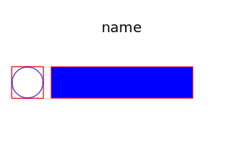
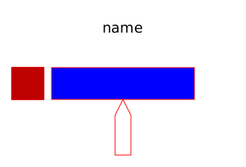
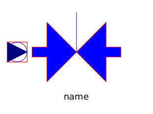

This package contains components:
Pressure drop is taken from partial model SimpleFriction. Thermodynamic equations are defined in partial models (package Partials).
| Name | Description |
|---|---|
|  IsolatedPipe | Pipe without heat exchange |
|  HeatedPipe | Pipe with heat exchange |
|  Valve | Simple valve |